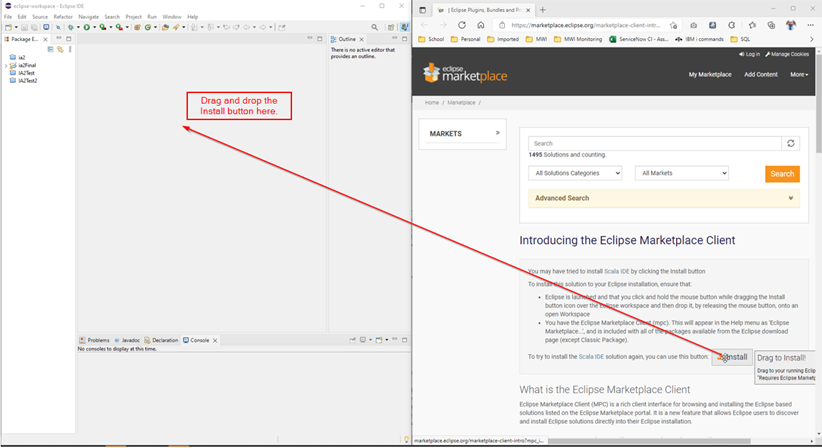
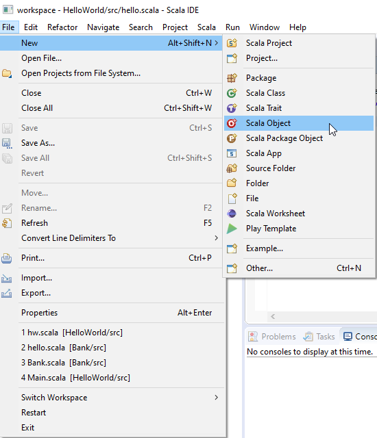

1. Start at Scala's website here
2. Click on Download Coursier (big red button), or go here.
3. Type the commands in your terminal from your choice of install package.
Example, For the native launcher:
$ curl -fLo cs https://git.io/coursier-cli-"$(uname | tr LD ld)"
$ chmod +x cs
$ ./cs install cs
$ rm cs
This will install Coursier, and add it to your PATH
1. Start at Scala's website here
2. Click on Download Coursier (big red button), or go here.
3. Type the commands in your terminal from your choice of install package.
Example, For the native launcher (This needs to be run in cmd.exe not Powershell):
> bitsadmin /transfer cs-cli https://git.io/coursier-cli-windows-exe "%cd%\cs.exe"
> .\cs --help
1. Go to: Eclipse Plugins, Bundles and Products - Eclipse Marketplace
2. Drag and drop the installation file into your open Eclipse.
3. Then click through the prompts
1. Start Eclipse
2. Open new Scala Project

3. Open new Scala Object
4. Insert the code
object Hello {
def main(args: Array[String]) = {
println("Hello, world")
}
}
5. Click on the green 'Run' button.

Reading command line arguments is similar to other Java based programming languages
Command line arguments are stored in an array named "args"
This is demonstrated by the below program that adds two numbers
Note that the command line arguments are stored as Strings
object addTwoNumbers {
def main(args: Array[String])
{
println("Adding the first two arguments")
var i: Int=args(0).toInt
var j: Int=args(1).toInt
var sum: Int= i+j
println("The sum of two arguments is " + sum)
}
}
The Scala API (Application Programming Interface) can be found here: Scala Standard Library 2.13.7 (scala-lang.org)